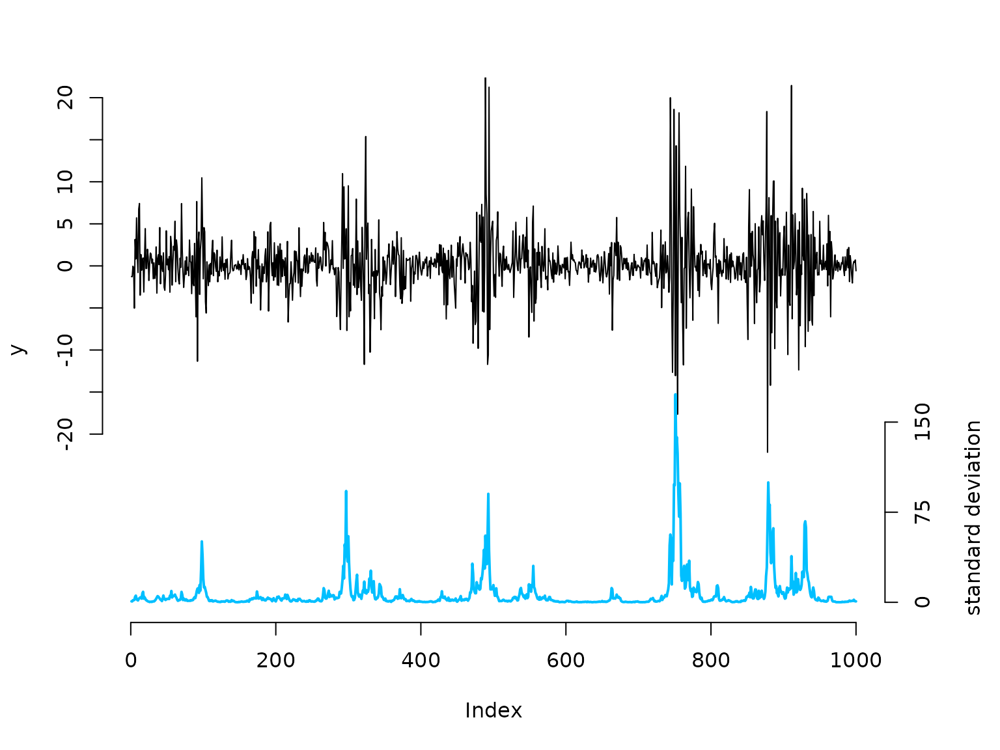
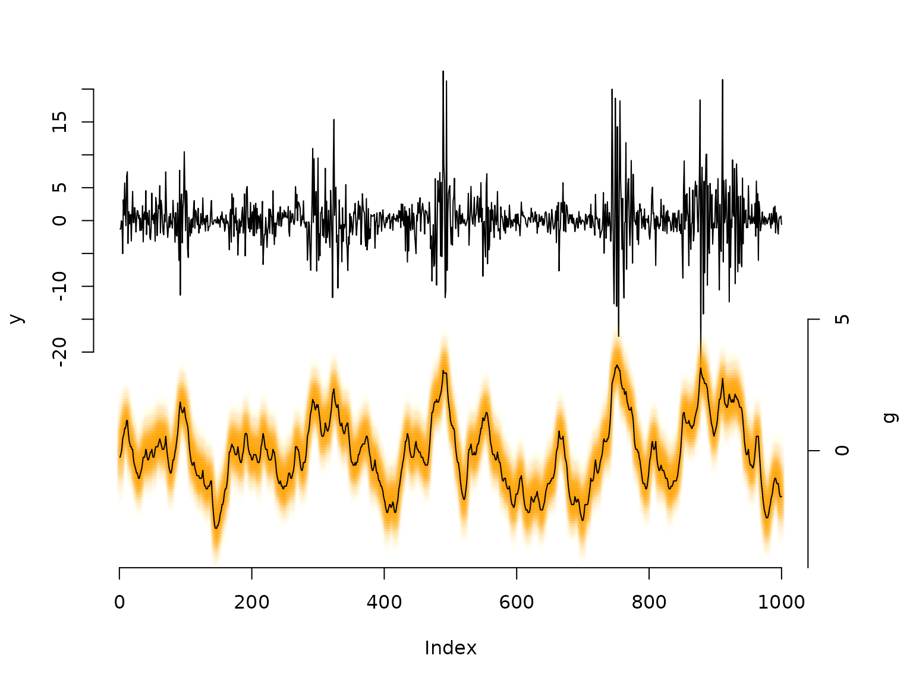

State space models
Jan-Ole Koslik
State_space_models.RmdBefore diving into this vignette, we recommend reading the vignette Introduction to LaMa.
This vignette shows how to fit state space models which can be interpreted as generalisation of HMMs to continuous state spaces. Several approaches exist to fitting such models, but Langrock (2011) showed that very general state space models can be fitted via approximate maximum likelihood estimation, when the continous state space is finely discretised. This is equivalent to numerical integration over the state process using midpoint quadrature.
Here, we will showcase this approach for a basic stochastic volatily model, which can be used to describe fincancial markets. In this model the unobserved marked volatility is described by an AR(1) process:
with autoregression parameter a dispersion parameter . Share returns can then be modelled as where and is the baseline standard deviation of the returns (when is in equilibrium), which implies
Simulating data from the stochastic volatility model
We start by simulating data from the above specified model:
beta = 2 # baseline standard deviation
phi = 0.95 # AR parameter
sigma = 0.5 # variability of the AR process
n = 1000
set.seed(123)
g = rep(NA, n)
g[1] = rnorm(1, 0, sigma / sqrt(1-phi^2)) # stationary distribution of AR process
for(t in 2:n){
# sampling next state based on previous state and AR(1) equation
g[t] = rnorm(1, phi*g[t-1], sigma)
}
# sampling zero-mean observations with standard deviation given by latent process
y = rnorm(n, 0, beta * exp(g/2))
# share returns
oldpar = par(mar = c(5,4,3,4.5)+0.1)
plot(y, type = "l", bty = "n", ylim = c(-40,20), yaxt = "n")
# true underlying standard deviation
lines(beta*exp(g)/7 - 40, col = "deepskyblue", lwd = 2)
axis(side=2, at = seq(-20,20,by=5), labels = seq(-20,20,by=5))
axis(side=4, at = seq(0,150,by=75)/7-40, labels = seq(0,150,by=75))
mtext("standard deviation", side=4, line=3, at = -30)
par(oldpar)Writing the negative log-likelihood function
This likelihood formulation corresponds to a fine discretization of
the continuous state space into the intervals b with width
h and midpoints bstar.
nll = function(par, y, bm, m){
phi = plogis(par[1])
sigma = exp(par[2])
beta = exp(par[3])
b = seq(-bm, bm, length = m+1) # intervals for midpoint quadrature
h = b[2] - b[1] # interval width
bstar = (b[-1] + b[-(m+1)]) / 2 # interval midpoints
# approximating t.p.m. resulting from midpoint quadrature
Gamma = sapply(bstar, dnorm, mean = phi * bstar, sd = sigma) * h
delta = h * dnorm(bstar, 0, sigma / sqrt(1-phi^2)) # stationary distribution
# approximating state-dependent density based on midpoints
allprobs = t(sapply(y, dnorm, mean = 0, sd = beta * exp(bstar/2)))
# forward algorithm
-forward(delta, Gamma, allprobs)
}Results
## parameter estimates
(phi = plogis(mod$estimate[1]))
#> [1] 0.9516547
(sigma = exp(mod$estimate[2]))
#> [1] 0.4437049
(beta = exp(mod$estimate[3]))
#> [1] 2.183825
## decoding states
b = seq(-bm, bm, length = m+1) # intervals for midpoint quadrature
h = b[2]-b[1] # interval width
bstar = (b[-1] + b[-(m+1)])/2 # interval midpoints
Gamma = sapply(bstar, dnorm, mean = phi*bstar, sd = sigma) * h
delta = h * dnorm(bstar, 0, sigma/sqrt(1-phi^2)) # stationary distribution
# approximating state-dependent density based on midpoints
allprobs = t(sapply(y, dnorm, mean = 0, sd = beta * exp(bstar/2)))
# actual decoding
probs = stateprobs(delta, Gamma, allprobs)
states = viterbi(delta, Gamma, allprobs)
oldpar = par(mar = c(5,4,3,4.5)+0.1)
plot(y, type = "l", bty = "n", ylim = c(-50,20), yaxt = "n")
# when there are so many states it is not too sensable to only plot the most probable state,
# as its probability might still be very small. Generally, we are approximating continuous
# distributions, thus it makes sense to plot the entire conditional distribution.
maxprobs = apply(probs, 1, max)
for(t in 1:1000){
colend = round((probs[t,]/(maxprobs[t]*5))*100)
colend[which(colend<10)] = paste0("0", colend[which(colend<10)])
points(rep(t, m), bstar*4-35, col = paste0("#FFA200",colend), pch = 20)
}
# we can add the viterbi decoded volatility levels as a "mean"
lines(bstar[states]*4-35)
axis(side=2, at = seq(-20,20,by=5), labels = seq(-20,20,by=5))
axis(side=4, at = seq(-5,5, by = 5)*4-35, labels = seq(-5,5, by = 5))
mtext("g", side=4, line=3, at = -30)
par(oldpar)